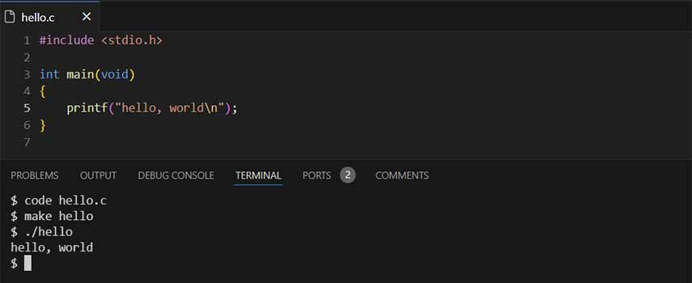
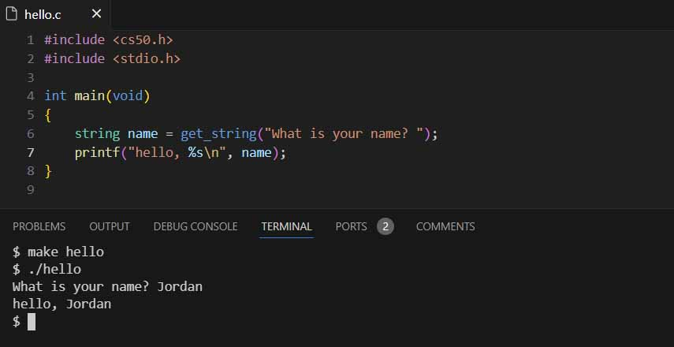

CS50x - Lecture 1 - Part 1.
linux, variables, and data types
Welcome to my Lecture 1 notes for CS50x 2024. Lecture 1 introduces us to programming in a real-world language called C.
While computers can only understand binary, or what we call machine code, humans instead write source code, that is code or instructions that is (hopefully) readable by other humans. There are some conventions to write code that makes it easier to read and undestand. As with all things, there is both good code, and bad code. Good code not only works and does what's intended, but is easy to read and modify, and runs efficiently.
Computers convert source code into machine code through a program called a compiler.
Good code
This lecture focuses on writing good code. Good code is evaluated on 3 criteria:
- Correctness: does the code actually work?
- Design: how efficiently does the code run?
- Style: is the code consistent and easy to read?
Starting to code
If you wanted to start to code on your own, you'd probably need to install the language you want from the internet onto your computer. Then you could use a basic text editor that comes installed with your Operating System, but you'd probably also want a fancy text editor with tools for automatically formatting your code and highlighting different syntax and errors that may be present. Ideally you'd start learning an integrated development environment or IDE that has tons of tools that help you write your code and test it all in one place. Instead, what you really should do, especially just starting out is to use CS50's cloud-based IDE, that has all of the tools and resources (as well as a bunch of handy "training wheels") already installed, prepared, and ready to use. To do so, go to cs50.dev.
I've used Visual Studio Code, which is Microsoft's open-source IDE, before starting this course, but by using the tools provided by CS50 I've learned how things actually work and how to utilize them efficiently so much quicker than I would have on my own. It's a really great resource, and a lot of thought and effort was put into to really streamline learning these potentially difficult concepts.
So now we're in a version of VS Code that's completely online. We now have a virtual codespace in the cloud running a Linux system. Most production servers today run Linux and only have a command-line interface (CLI), so it's important to get used to the commands needed to navigate a terminal rather than the traditional point and click of a graphical user interface (GUI). Here are some of the most useful commands that took me quite a while to remember:
- cd - change directory. A directory is just a folder on your computer. One period ' . ' selects the current working directory, two periods ' .. ' selects the parent directory, and cd name would enter the directory with the filename 'name'
- cp - copy. Copy a file by giving 2 names, first the source, and second the destination, so cp source_file destination_file would copy the source_file to a new file called destination_file (if the destination doesn't exist, it'll be created. If it does, it'll be overwritten)
- ls - list. List all the files in the current working directory, or the directory you're currently in
- mkdir - make directory. Make a new directory
- mv - move. Move or rename a file, can be used like mv old_filename new_filename
- rm - remove. Delete a file
- rmdir - remove directory. Delete a directory
As you can see, computer scientists and programmers like to make everything as short as possible. No, this NEVER creates any confusion...
First program
To make my first program in C. I started by creating a new file. The command to create or open a file in VS Code is simply code filename.extension. When using the terminal like this, it's important to include the extension of the file, in this case .c. The first program, and usually the first program any programmer makes in a new language is hello.c. So, code hello.c was my very first step in learning C.
Now the fun begins, here is the very first program most people make:
#include <stdio.h>
int main(void)
{
printf("hello, world\n");}
The first line is a header file, and instructs the compiler to include the file <stdio.h>, or standard input output. This allows us to access the function printf which will write out what's inside it to the screen. Header files link to libraries, which is code that has already been written that we can use to make our life easier, to not reinvent the wheel as they say.
The next line, int main(void), isn't explained yet, as it requires a bit more theoretical knowledge of computer systems and how programs operate to understand. For now, I'll just say that it's calling the main function of the whole program to run.
printf as I said before, prints whatever is inside the ( ) and inside the " " within the brackets. So, you can see, it should say hello, world. But there's a special character inside the quotes with the message, the backslash \n. Backslash in C is a special character called a escape sequence that just tells the compiler to expect specific instructions afterwards. In this case \n tells the computer to write a newline character, which moves our cursor down a line. This makes the program look more aesthetically pleasing.
After every statement in C, we end with a semicolon ; which tells the compiler that the statement is finished.
Now that the program is written we can run it in our environment by going back to the terminal, entering make hello. Which compiles our source code into an executable file in machine code. Now it can be run by entering ./hello
Let's see the result:
Variables
Now that we have a basic program down. We need variables to start writting more useful programs. Just like in math, a variable is like an empty box where we can store different information in, and once it's stored, we're able to perform different operations or functions with the information inside.
The next program is just a modification of the first, but this time with a new name variable so we can dynamically change the message depending on the user's input. Let's see what that looks like:
This time I also included the <cs50.h> header file, or cs50 library, so I can use the handy get_string( ) function to prompt the user for a string, which is stored in the variable name of the type string (another helpful tool from the cs50 library). Now, instead of printing to the screen a static word, like world or my name Jordan, we want the message to change depending on what's inside the variable name. To do this, we print %s, another special character that tells the compiler to replace that part with a string which we declare outside the quotation marks.
Data types
A few important rules on syntax from these changes: First, when you create, or declare, a variable in C, you need to tell the computer what type of data you're storing. Here's a list of the most common data types:
- bool - boolean value, named after the Mathematician George Boole, is either true or false
- char - a single character
- float - a floating point number, any number with a decimal, for example: 1.5
- double - a floating point number that takes up twice as much space, 64 bits (up from 32 bits)
- int - an integer, or whole number
- long - an integer that takes up twice as much space, 64 bits
- string - a string for now, this one is special to <cs50.h>
Next is the use of format codes. The format specifier % tells the function to prepare to receive a variable. Here are the matching format codes for the corresponding data types:
- %c - char
- %f - float
- %lf - double, or long float
- %i - int
- %li - long, or long integer
- %s - string
When programming in C, it's the job of the programmer to tell the computer exactly what they're looking for and where, so it's important to keep in mind what type of variable you want to use to declare and use it properly.
I didn't realize just how much information is covered in each of these lectures. As such, I'll be breaking each one into multiple parts. The next part will cover conditionals, loops, and custom functions to simplify our code.